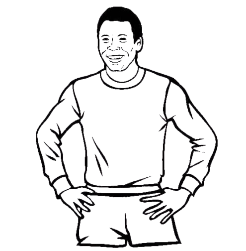

A triste notícia da morte do jogador Pelé
No texto abaixo iremos ver como foi a morte do jogador
O Hospital Israelita Albert Einstein confirma com pesar o falecimento de Edson Arantes do Nascimento, o Pelé, no dia de hoje, 29 de dezembro de 2022,
às 15h27, em decorrência da falência de múltiplos órgãos, resultado da progressão do câncer de cólon associado à sua condição clínica prévia", diz o texto divulgado
O que causou a morte da Pelé?
A certidão de óbito de Pelé, emitida hoje (30), mostra que a morte do Rei do Futebol foi causada por adenocarcinoma de cólon, broncopneumonia,
insuficiência renal, e insuficiência cardíaca.

Sintomas
Os sintomas de câncer de intestino podem incluir mudanças nos hábitos intestinais (como diarreia, prisão de ventre ou alterações no formato das fezes),
sangue nas fezes, dor abdominal, perda de peso inexplicável e fadiga.